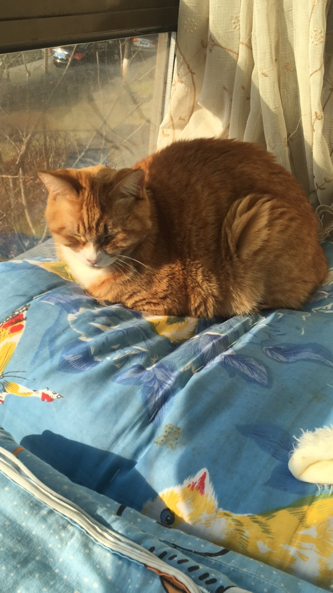
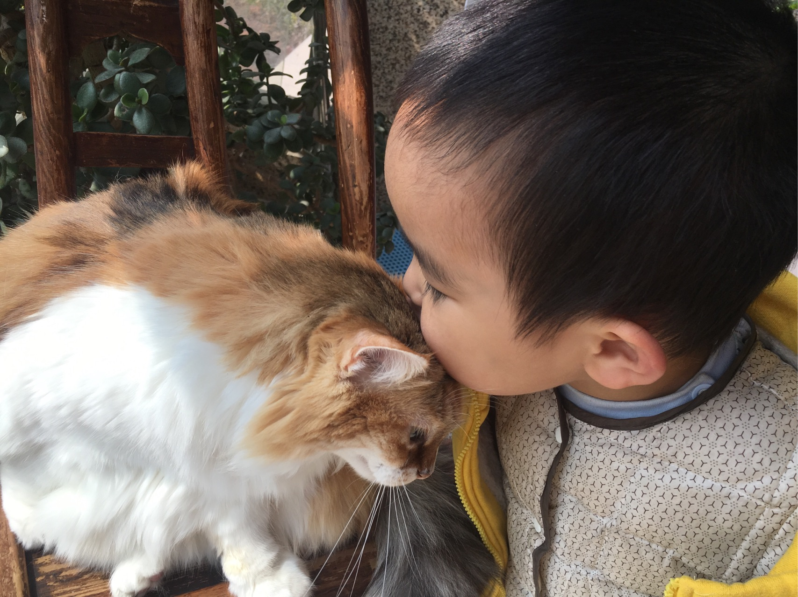
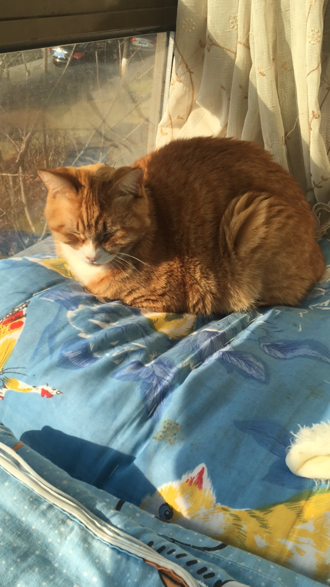
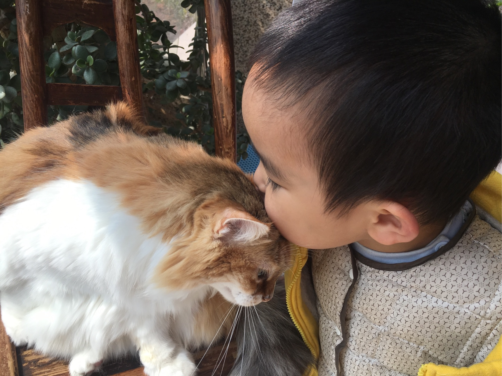
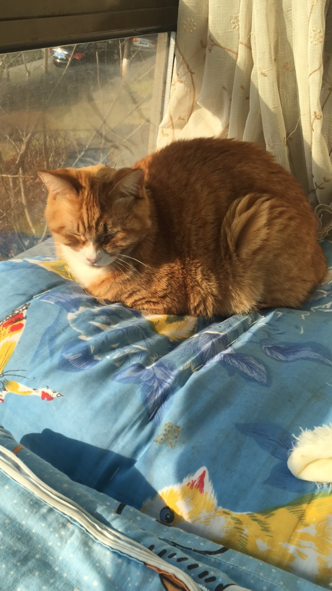
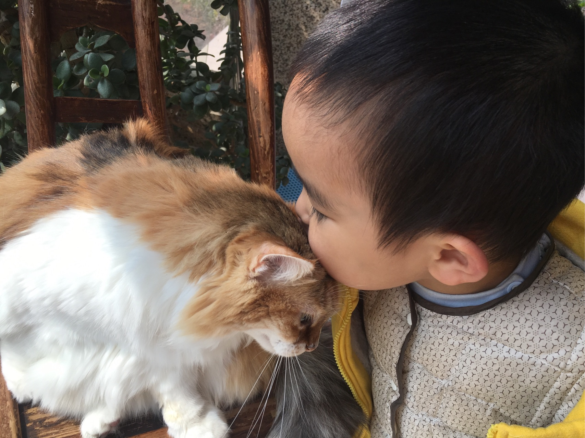

名字:
猫猫不爱吃青椒
性别:男
介绍:很纠结的一只喵
问题
答案
新建于:2017-04-28 05:19:46 PM，更新于2017-04-28 08:04:46 PM
Pre上一页
Next下一页
跳页:
正文: 我和我家猫相遇大概是缘分吧……2010年五月五日我第一次见到我家大猫的样子，惨兮兮，鼻孔全被脓堵上了，瘦得皮包骨，牙齿都没长出来，送到宠物医院医生都让我别费钱了...可是我没放弃它。这是大猫现在的样子。
我家小猫，其实和大猫是同一年的猫，8月份捡来的时候像个ET一样瘦的皮包骨头，像铁板烧一样躺在一个垃圾桶旁边，有进气没出气的，后来...十个橘猫九个胖小盆友是我儿子，比猫咪小四岁，非常喜欢猫咪。
Pre上一页
Next下一页
跳页:

 我家小猫，其实和大猫是同一年的猫，8月份捡来的时候像个ET一样瘦的皮包骨头，像铁板烧一样躺在一个垃圾桶旁边，有进气没出气的，后来...十个橘猫九个胖小盆友是我儿子，比猫咪小四岁，非常喜欢猫咪。
我家小猫，其实和大猫是同一年的猫，8月份捡来的时候像个ET一样瘦的皮包骨头，像铁板烧一样躺在一个垃圾桶旁边，有进气没出气的，后来...十个橘猫九个胖小盆友是我儿子，比猫咪小四岁，非常喜欢猫咪。